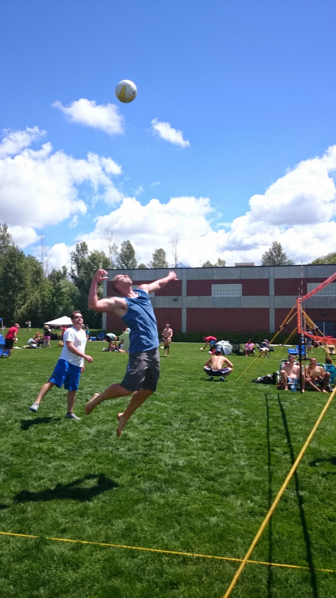

The Kuhlman Home Page

Welcome to my Home Page!
I am currently working on my Computer Science degree through SLCC to eventually transfer to Weber.
I love most sports, my favorite being volleyball. (See Photo Above). Below you will find a list of
some of my interests and capabilities.
| 1. Finished Computer Science Associates Degree at SLCC. |
2. Finished certificates in Computer Science Fundamentals and Web Programming. |
| 3. Working on certificates for Mobile Application Development and Software Development. |
4. Love Sports and I can be overly competitive about them. |
| 5. Take charge type personality, but very good team player. |
6. I love new technology especially hand held devices. |